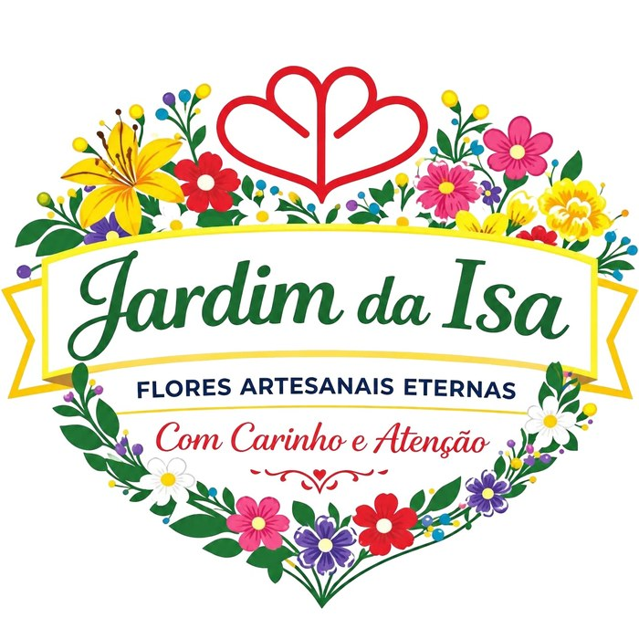

Jardim da Isa
Flores Artesanais Eternas
Flores feitas à mão, com carinho e atenção. Segue-nos para veres as novidades e encomendar.
Instagram Facebook
Flores Artesanais Eternas
Flores feitas à mão, com carinho e atenção. Segue-nos para veres as novidades e encomendar.
Instagram Facebook